Lecture 12: Foundation Models and Representation Learning
Video blocked (ad-blocker or local file mode).
Watch on YouTubeVideo not loading? Watch on YouTube
Original lecture. Tengyu Ma presents the pre-train/adapt paradigm, representation learning, linear probing, and LoRA.
Coverage and sourcing
This lesson follows Lecture 12 of Stanford CS229 (Machine Learning, Spring 2026, instructor Tengyu Ma): “Foundation Models”. The lecture presents the pre-train/adapt paradigm after GPT-3: representation learning on massive unlabeled data, linear probing, LoRA, multitask learning, and the parallelism that makes pre-training possible. It draws on the official subtitle transcript and the course notes. The coverage map at the end of the chapter maps every major lecture claim to the section that covers it. Figures and claims marked “October 2026” are updates added after the lecture, each with its source.
The job: a sentiment classifier with 500 labels
A startup has 500 labeled movie reviews (positive/negative) and wants a classifier. Lectures 2 through 8 say: fit a model on the 500. A linear model on 500 examples with 10,000 word features will memorize noise (lecture 6). A neural network will do worse. The classical toolkit starves on 500 labels.
But the startup also has the entire internet: billions of unlabeled sentences. The key question: can the unlabeled billions teach the model about language first, so the 500 labels only need to teach the sentiment part?
First attempt: train on the 500 alone
Watch it fail with numbers. Vocabulary 10,000 words, logistic regression: 10,001 knobs, 500 examples. The model fits training perfectly (loss near 0) and scores 58 percent on fresh reviews: barely above coin flip. The word “masterpiece” appears twice, both positive. The model assigns it a huge weight. In fresh reviews “masterpiece” appears in sarcastic negatives and the classifier burns. This is lecture 6’s variance with the numbers filled in: n << d, memorization, no generalization.
Subchapter: the 58 percent, explained
Why 58 and not 50? With 10,001 knobs and 500 examples the ratio is 20 parameters per example: total memorization capacity. Training loss goes near 0. On fresh reviews the model keeps only what generalizes: a handful of genuinely predictive words (“masterpiece” twice-positive, “awful” mostly negative) plus noise. The 8 points above chance are the few real signals surviving the memorization. The lesson: n << d does not give 50 percent (pure chance). It gives chance plus whatever tiny true signal the noise did not drown. With 500 labels and 10,000 features, that is 8 points.
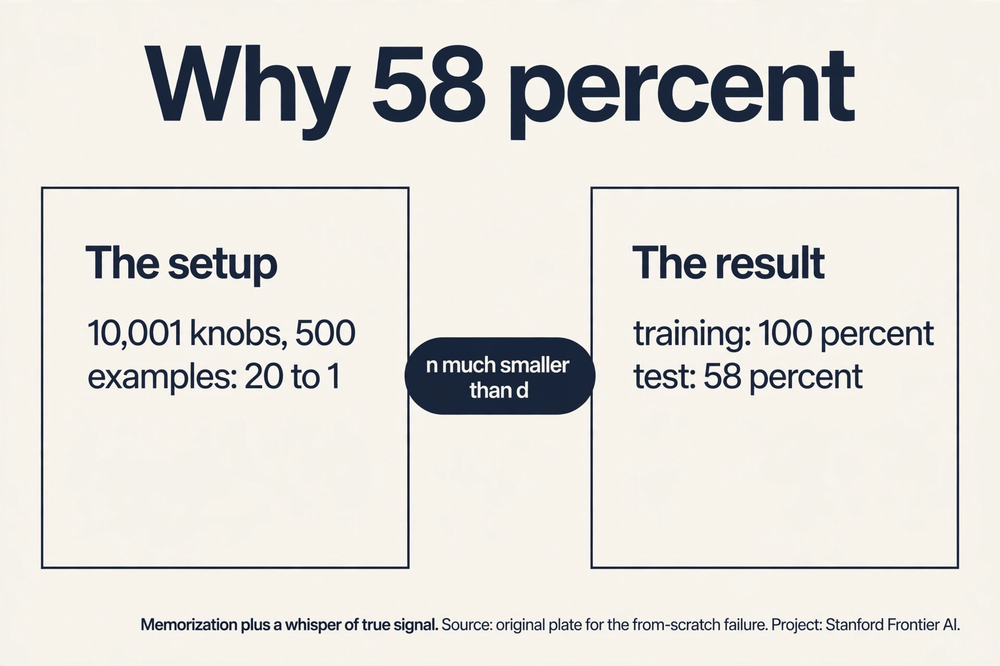
The paradigm: pre-train, then adapt
A foundation model is a large model pre-trained on massive broad data, then adapted to specific tasks. Pre-training uses a self-supervised objective that needs no labels: predict the next word (lecture 14), denoise an image (lecture 11), fill masked words. The model learns representations: internal vectors that capture meaning. “Masterpiece” and “triumph” end up near each other in representation space because they appear in similar contexts across billions of sentences.
Then adaptation spends the 500 labels wisely. The representations already know language. The labels only teach the sentiment direction. The lecture calls this the emergent paradigm after GPT-3: one pre-trained model serves thousands of downstream tasks, and the per-task data need drops by orders of magnitude.
Why it works, mechanistically: pre-training moves the model to a region of parameter space where good solutions for many tasks are nearby. Fine-tuning on 500 labels is a short walk from an excellent starting point, not a random search. The 500 labels steer. The billions built the map.
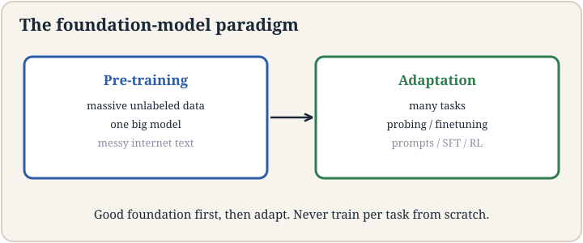
Subchapter: the contamination audit
“Unlabeled internet data” includes the test sets. The audit has three tools. N-gram overlap: what fraction of the benchmark’s 13-grams appear verbatim in the pre-training corpus? High overlap means the model may have read the test. Canary strings: benchmarks like BIG-bench embed random GUIDs in their data. If the model completes a canary, it trained on the benchmark. Post-cutoff tests: same benchmark style, new items written after the training cutoff. A model scoring 95 percent on the 2022 items and 70 on the 2025 items memorized, not generalized. The decision rule: never trust a benchmark number without its contamination report. The paradigm’s evaluation crisis is structural: the training set is “everything”, so every test is suspect.
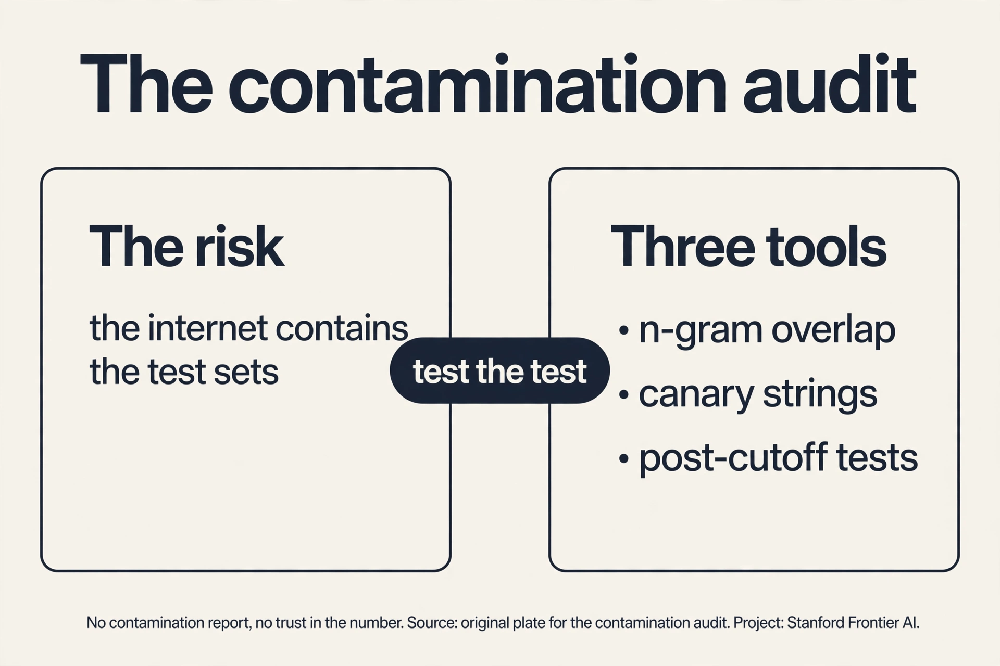
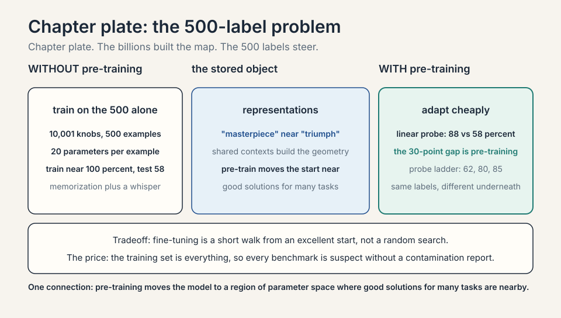
The self-supervised objectives
“Pre-train on unlabeled data” hides the key invention: the self-supervised objective, a task whose labels come free with the data. Three dominate.
Subchapter: next-token prediction, worked
Text: “the cat sat on the”. The task: predict “mat”. Every position in every document is a training example: a trillion-word corpus yields a trillion examples, no human labels. Work the loss: vocabulary 50,000, model assigns P(mat) = 0.02. Cross-entropy: -log(0.02) = 3.91. As training proceeds the model learns grammar, facts, and reasoning patterns as side effects of predicting the next word well. This is the GPT objective (lecture 14 builds the architecture). The interview line: next-token prediction is classification with 50,000 classes, repeated a trillion times. The supervision was hiding in the text order all along.
Subchapter: masked language modeling, worked
Text: “the cat sat on the [MASK]”. The task: fill the blank. Masked language modeling (BERT’s objective) masks 15 percent of tokens at random and predicts them from both directions. Work it: P(mat | context) = 0.3: loss -log(0.3) = 1.20. Unlike next-token, the model sees the right side too (“on the [MASK]” has no right context here, but “the [MASK] sat” does). Bidirectional context suits understanding tasks (classification, search). Next-token suits generation (it predicts left to right, like writing). The interview line: BERT reads both ways and cannot generate. GPT reads one way and can. The objective picks the strength.
Subchapter: contrastive learning, worked
Two views of one image (crop, color jitter): the model must pull their representations together and push apart views of different images. The contrastive loss (InfoNCE): for a batch of N pairs, each anchor’s positive scores against 2N-1 others. Work it: anchor “cat photo A”, positive “cat photo A cropped”: similarity 0.9. Negatives: 127 other photos, best similarity 0.4. Loss: -log(exp(0.9) / (exp(0.9) + sum exp(negatives))). The model learns “same object, different view” without any label. CLIP does this across modalities: pull image and caption together, push mismatches apart. The interview line: contrastive learning is classification where the classes are “this pair matches” vs “it does not”. Lecture 13 builds it fully.
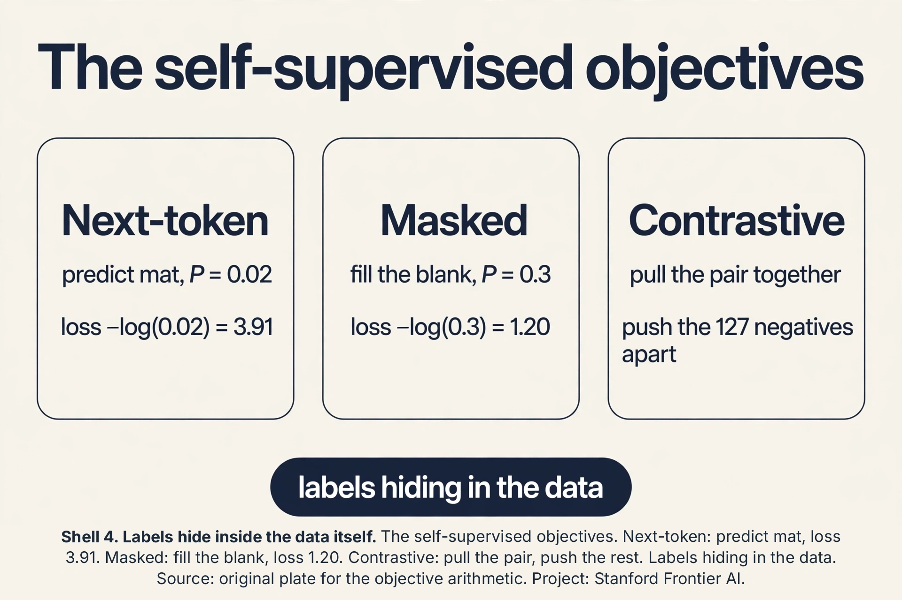
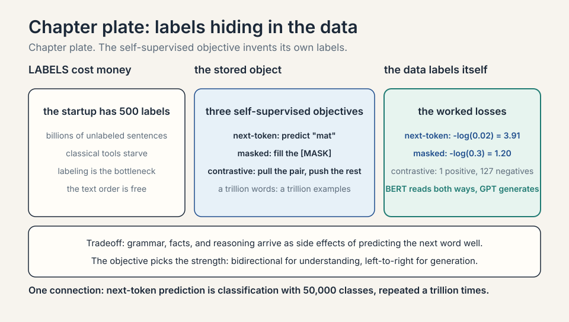
Linear probing: how good are the representations?
Linear probing is the honesty test. Freeze the pre-trained model. Take its representations of your 500 reviews. Train only a linear classifier (lecture 2’s machinery) on top. If the representations are good, a linear probe scores well: the sentiment direction is already linearly separable in representation space.
Numbers from the lecture’s framing: the linear probe on frozen representations hits ~88 percent on fresh reviews versus 58 percent for the from-scratch model. The 30-point gap is the value of pre-training, isolated: same 500 labels, same linear head, the only difference is the representations underneath. When a probe fails, the representations lack the task’s information and you need deeper adaptation.
Subchapter: probe the probe
A linear probe can fail for two reasons: the information is absent, or it is present but tangled (not linearly readable). Distinguish them with the probe ladder. Step 1: linear probe. Fails at 62 percent. Step 2: MLP probe (a small nonlinear head on frozen representations). Scores 80 percent: the sentiment information is there, just not linear. Step 3: full fine-tuning, 85 percent. The ladder tells you what to blame: if the MLP probe also fails, the pre-training never captured sentiment and no shallow adaptation will save you. If the MLP probe succeeds, the representations are fine and the linear head was the bottleneck. Never read a failed linear probe as “bad representations” without climbing the ladder.
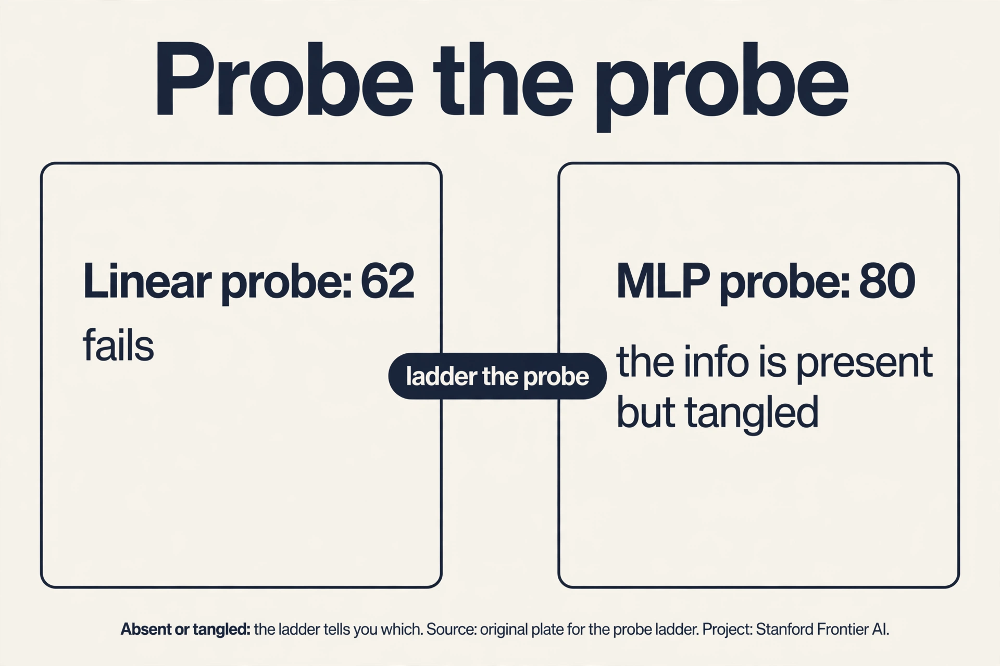
LoRA: adapt without moving billions
Full fine-tuning updates every parameter: for a 7B model, 7 billion knobs move on 500 labels. Overkill and overfitting-prone, and each task needs its own 7B copy. LoRA (low-rank adaptation) restricts the update’s degrees of freedom. For each weight matrix W, write the adapted matrix as:
W_adapted = W + A * B
W stays frozen. A and B are thin: if W is d by d, A is d by r and B is r by d, with rank r small. Only A and B train.
Count the savings with the lecture’s numbers: d = 1,000, r = 10. Full update: d^2 = 1,000,000 degrees of freedom. LoRA: 2dr = 20,000. Fifty times fewer. For real models (d = 4,096, r = 8): 16.8M full vs 65,536 LoRA: a 256x reduction. The adapter (A, B) is megabytes. The base model stays shared across tasks. Ship one 7B model plus a 10MB adapter per task instead of a 7B copy per task.
Why low rank works: adaptation is a small change (the lecture’s point: adapting means changing little), and small changes to big matrices live in low-dimensional subspaces. The rank r is the dial: r = 8 to 64 in practice, tuned on dev.
Subchapter: LoRA merges free
The adapter has a deployment trick. During training, the forward pass computes Wx + ABx: two matrix multiplies, slightly slower. At deployment, merge: W’ = W + AB, computed once. Then inference is a single multiply by W’, exactly as fast as the base model. Zero latency cost. This is why LoRA won over adapters that insert new layers (which cannot merge): the lesson’s formula W + AB is mergeable by construction. Serving story: keep one frozen base model in memory, swap merged W’ per task, or keep W and add AB on the fly for multi-tenant serving. The rank r controls the adapter file: at d = 4096, r = 8, each adapted matrix ships 65,536 fp16 values = 128 KB. A full 7B-model adapter set is tens of MB, not tens of GB.
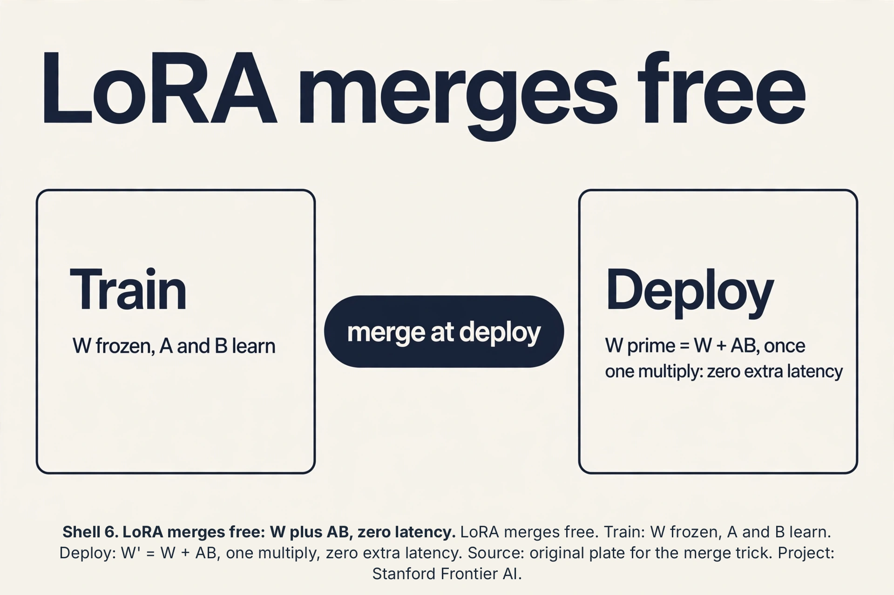
Scaling laws: the power law of pre-training
Bigger models, more data, more compute: the loss falls on a power law. The scaling laws (Kaplan et al., 2020) fit: loss = (N_c / N)^alpha + (D_c / D)^beta + …, where N is parameters, D is data, and the exponents are measured constants.
Subchapter: the law, worked
Double the parameters: loss falls by a predictable factor (alpha about 0.07 for language models: 2^0.07 = 1.05x better per doubling, compounding over many doublings). The law’s power is planning: fit the curve on small runs, predict the large run’s loss before paying for it. Chinchilla (Hoffmann et al., 2022) corrected the recipe: Kaplan’s reading said “bigger models”, Chinchilla said “bigger models AND proportionally more data”. The rule: about 20 tokens per parameter. A 70B model wants 1.4T tokens. Train a 70B model on 300B tokens and you undertrained it: the famous Chinchilla result showed a 70B model on 1.4T tokens beating a 280B model on 300B tokens. The interview line: scale is a budget allocation problem. Parameters and data grow together. Starve either and the law punishes you.
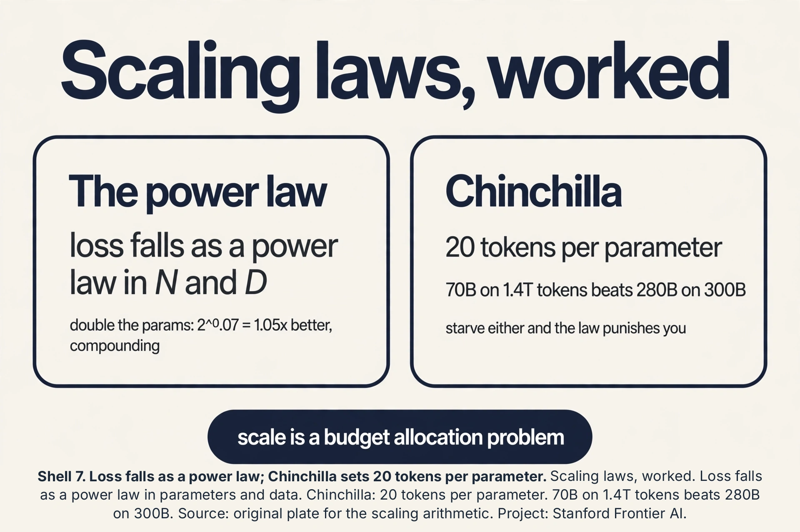
Emergence and in-context learning
Scale past a threshold and new behaviors appear that small models lack: emergent abilities. Few-shot learning, chain-of-thought reasoning, instruction following. They were not programmed. They arrived with size.
Subchapter: in-context learning, worked
No weight updates. The prompt contains examples:
Review: "a triumph" -> positive Review: "a disaster" -> negative Review: "a masterpiece" ->
The model outputs “positive”. It inferred the task from the examples in the context: in-context learning. Small models struggle with this. Large ones can do it reliably. Why it matters for the 500-label startup: sometimes you need zero labels, not 500. The paradigm’s ladder: zero-shot (no examples), few-shot (examples in context), linear probe (frozen + head), LoRA (small update), full fine-tune (all weights). Climb only as far as the task demands. The interview line: in-context learning is adaptation without gradients. It works when the capability is already in the representations. The probe ladder tests exactly that.
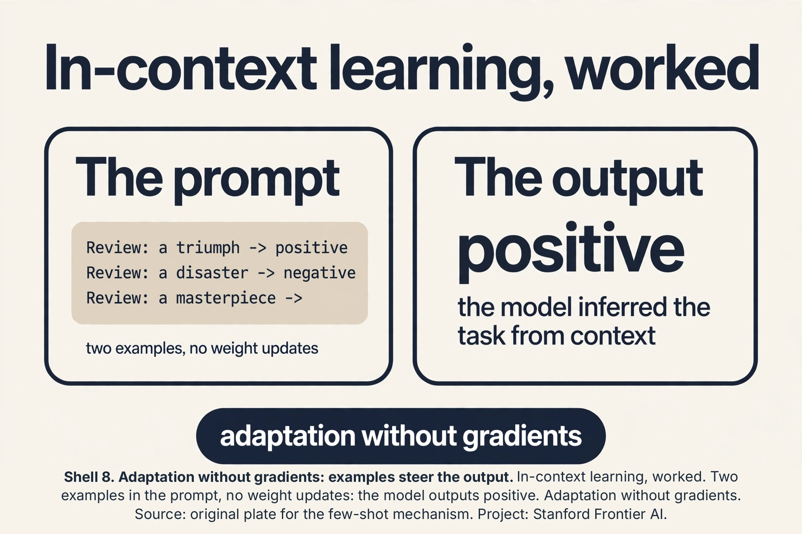
The adaptation zoo
LoRA is one adaptation method. The zoo has five, spanning the cost-expressiveness trade.
Subchapter: full fine-tuning, priced
Full fine-tuning: update all 7B knobs. Most expressive, most overfitting on 500 labels, one 14 GB copy per task (fp16).
Subchapter: LoRA, priced
LoRA: W + AB, rank r. d=4096, r=8: 65,536 values per matrix, tens of MB per task. Merges free.
Subchapter: adapters, priced
Adapters: insert small bottleneck layers between frozen ones. Similar savings to LoRA, but the extra layers cannot merge: permanent latency cost.
Subchapter: prefix and prompt tuning, priced
Prefix/prompt tuning: learn soft prompt vectors prepended to the input. The model never changes. Cheapest (thousands of values), weakest (only steers the input).
Subchapter: QLoRA, priced
QLoRA: LoRA on a 4-bit quantized base model. A 65B model fits on one 48 GB GPU: the base in 4-bit, the adapters in 16-bit.
The interview table:
| Method | Knobs moved | Per-task cost | Merges free | Power |
|---|---|---|---|---|
| Full fine-tune | 7B | 14 GB copy | n/a | max |
| LoRA | ~20M (r=8) | tens of MB | yes | high |
| Adapters | ~20M | tens of MB | no | high |
| Prompt tuning | ~20K | KB | n/a | low |
| QLoRA | ~20M | tens of MB | yes | high, 65B on 1 GPU |
Decision rule: prompt tuning for steering, LoRA/QLoRA for adapting, full fine-tune when the behavior change is large (new domain, new modality). The lecture’s LoRA is the sweet spot the field converged on.
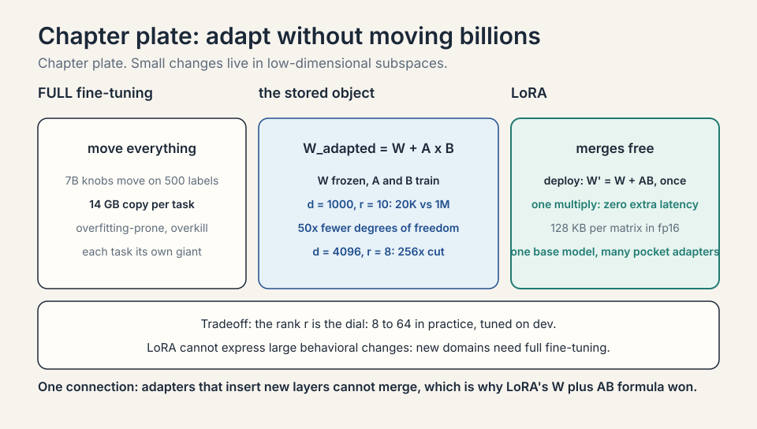
Multitask and parallelism
Two more pieces from the lecture. Multitask pre-training and adaptation: train on many tasks at once so representations serve all of them. The shared structure (grammar, facts, reasoning patterns) transfers. And parallelism: foundation models only exist because training parallelizes across thousands of GPUs (data, tensor, and pipeline parallelism split the work). The paradigm is a systems achievement as much as an algorithmic one: the pre-training run that makes everything else cheap is itself enormously expensive, amortized over all downstream uses.
Subchapter: 3D parallelism, worked
One GPU holds ~80 GB. A 70B model in fp16 is 140 GB: it does not fit. 3D parallelism splits three ways. Data parallel: copy the model to G GPUs, split the batch (lecture 8’s allreduce). Tensor parallel: split each matrix multiply across GPUs (half the rows here, half there, allreduce the partial sums). Pipeline parallel: split the layers (lecture 8’s bubble). Work it: 70B model, 8 GPUs. Tensor parallel 4x: each GPU holds 35 GB of weights. Pipeline 2x: each holds 17.5 GB. Data parallel 1x (no batch split here). Activations and optimizer states fill the rest. The 3D grid (data x tensor x pipeline) is tuned per run: tensor parallel within a node (fast NVLink), pipeline and data across nodes (slower network). The interview line: 3D parallelism is how 140 GB fits in 80 GB boxes. Every large pre-training run is a 3D grid.
Subchapter: the pre-training bill, priced
Training compute: about 6 * N * D FLOPs (6: forward 2, backward 4 per parameter per token). Chinchilla-optimal 70B on 1.4T tokens: 6 * 70e9 * 1.4e12 = 5.9e23 FLOPs. On 2,000 A100s (each ~1e14 fp16 FLOP/s sustained): 5.9e23 / (2000 * 1e14) = 2.95e6 seconds = 34 days. At ~$2/GPU-hour: 2,000 * 34 * 24 * 2 = $3.3M. One run, three million dollars, one month. This is why only a few organizations pre-train: the bill gates the paradigm. Adaptation (LoRA on the 500 labels) costs tens of dollars. The lecture’s economics: millions to build the map, pocket change to steer on it.
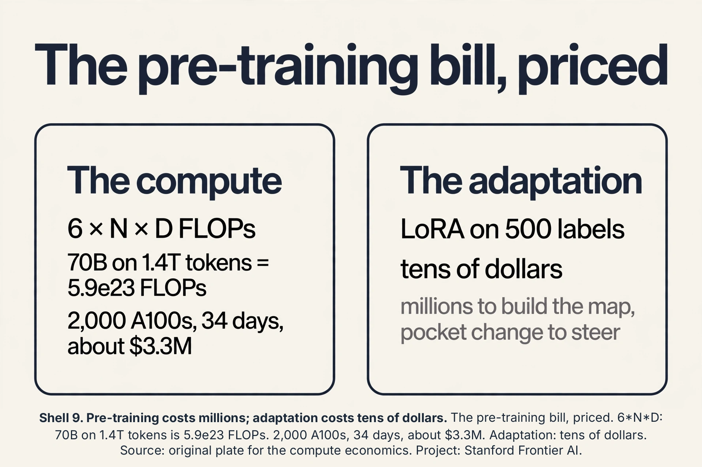
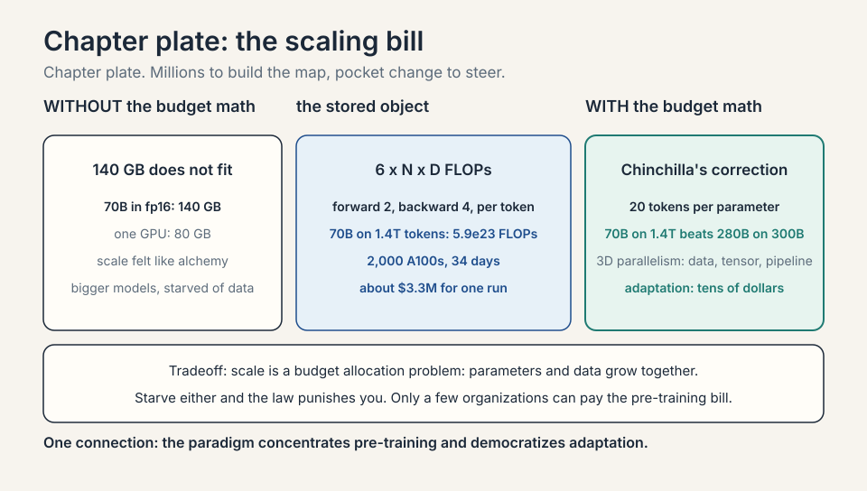
Instruction tuning, the thumbnail
Pre-training predicts the next word. Users want answers, not completions. Instruction tuning (SFT: supervised fine-tuning) trains the pre-trained model on (instruction, response) pairs: “Classify this review: …” -> “positive”. Thousands to millions of pairs. The model learns the assistant format: follow the instruction, answer directly.
Subchapter: SFT, the format
SFT teaches the format. Do not confuse the stages: a base model without SFT completes your prompt instead of answering it.
Subchapter: preference tuning, the taste
Preference tuning (RLHF/DPO, lecture 17’s territory) teaches the taste: which of two answers humans prefer. The pipeline: pre-train (billions of words, self supervised) -> SFT (instructions, supervised) -> preference tuning (human rankings). Each stage is cheaper than the last and more aligned with use. The interview line: the base model knows language. SFT makes it helpful. Preference tuning makes it likable.
The honest price
The paradigm buys label efficiency and pays four prices. First, pre-training cost: one run costs millions of dollars and months. Only a few organizations can pay it. Second, opacity squared: not only are the representations unreadable, their failures are unpredictable: the model inherits every bias and poison in the unlabeled billions. Third, adaptation limits: linear probing fails when the task needs information the pre-training never captured. LoRA’s low rank cannot express large behavioral changes. Fourth, evaluation contamination: the “unlabeled” internet contains the test sets, so reported numbers may measure memorization, not generalization. The lecture is clear-eyed: the paradigm is emergent, powerful, and not yet fully understood.
Mapping back
| Idea | Pain it answers | How |
|---|---|---|
| Pre-train then adapt | 500 labels, 10,000 features: 58 percent, memorization | Billions of unlabeled sentences build representations; 500 labels steer |
| Representations | Words are atomic symbols | “Masterpiece” near “triumph” in vector space from shared contexts |
| Linear probing | Are the representations any good? | Freeze, train linear head: 88 vs 58 percent isolates pre-training’s value |
| LoRA | Full fine-tuning moves 7B knobs per task | W + AB, rank r: d=1000, r=10 gives 20,000 vs 1,000,000 dof; MB adapters |
| Multitask + parallelism | One model per task; training too big for one GPU | Shared structure transfers; 3D parallelism makes the pre-train run possible |
| Self-supervised objectives | Labels cost money; text is free | Next-token (loss 3.91), masked (loss 1.20), contrastive: supervision hiding in the data |
| Scaling laws | Scale felt like alchemy | Power law in N and D; Chinchilla: 20 tokens/param; 70B/1.4T beats 280B/300B |
| In-context learning | Adaptation needed gradients | Few-shot in the prompt, no weight updates; the ladder: zero-shot to full fine-tune |
| Adaptation zoo | One adapter does not fit all | Full 14 GB, LoRA tens of MB merges free, adapters add latency, prompt KB, QLoRA 65B on 1 GPU |
| 3D parallelism | 140 GB does not fit 80 GB | Data x tensor x pipeline; tensor 4x plus pipeline 2x on 8 GPUs |
| Pre-training bill | The paradigm looked free | 6ND = 5.9e23 FLOPs; 2,000 A100s, 34 days, $3.3M; adaptation costs tens of dollars |
| Instruction tuning | Base models complete, not answer | SFT teaches format; preference tuning teaches taste; cheaper per stage |
A large model pre-trained on massive broad data and adapted per task, instead of trained per task from scratch. Before, each task needed its own labeled dataset and model: 500 labels meant a 500-label model. After GPT-3, one pre-trained model serves thousands of tasks: the 500 labels adapt a model that already knows language. The lecture calls it an emergent paradigm: scale produced behavior (few-shot learning, broad transfer) that smaller models did not show. It moves the starting point. Random initialization plus 500 labels is a blind search in a huge space: memorization. Pre-trained weights start near good solutions for many tasks, so 500 labels do a short, guided walk instead. Mechanistically, the representations already separate the concepts. The labels only identify which direction is sentiment.
Freeze the pre-trained weight W (d by d). Learn the update as a product of thin matrices: W + A*B with A d-by-r, B r-by-d, rank r small. Only A and B train. At d = 1,000, r = 10: 20,000 trainable values versus 1,000,000 for a full update, a 50x cut. At d = 4,096, r = 8: 65,536 versus 16.8M, a 256x cut. Each task ships a megabyte adapter. The base model is shared. When adaptation needs a large behavioral change that does not fit in a rank-r subspace: e.g., teaching the model a wholly new domain or unlearning deeply ingrained behavior. Rank r is the capacity dial. Raise it and LoRA approaches full fine-tuning’s expressiveness while losing its savings. Linear probing failing first is the signal that shallow adaptation is insufficient.
Whether the representations already contain the task’s information. Freeze the model, train only a linear head: high probe accuracy means the concept is linearly readable in representation space, and pre-training did the real work. Fine-tuning accuracy mixes representation quality with the adapter’s power to reshape them. Probe first: it is cheap, and it tells you whether to trust the representations or distrust the pre-training. The representations already solve the task. Fine-tuning adds almost nothing. Ship the probe: it is simpler, faster, and less prone to overfitting the 500 labels. Save deep adaptation for tasks where the probe lags.
Recap: the whole lesson on one screen
- The job. Sentiment from 500 labels. From scratch: 58 percent, memorization.
- The key question. Can unlabeled billions teach language first, so 500 labels teach only sentiment?
- The paradigm. Pre-train on broad data (no labels needed), adapt per task. One model, thousands of tasks.
- Representations. Vectors capturing meaning from context. The map the labels steer on.
- Linear probing. Freeze, linear head: 88 vs 58 percent. The honesty test for representations.
- LoRA. W + AB, rank r. d=1000, r=10: 20K vs 1M dof. MB adapters, shared base.
- Multitask, parallelism. Shared structure transfers. 3D parallelism makes pre-training possible.
Full update: d^2 = 4096^2 = 16,777,216 trainable values. LoRA: A is 4096x8, B is 8x4096: 240968 = 65,536 values. Ratio: 16,777,216/65,536 = 256. The adapter file per matrix: 65,536 values in fp16 = 131,072 bytes = 128 KB. A 7B model adapts a few hundred matrices: tens of MB per task adapter. The base model (tens of GB) is shared. That is the shipping story: one base, many pocket-sized adapters. No, if you merge: W’ = W + AB computed once, then inference is one multiply by W’, exactly base-model speed. Unmerged (Wx + ABx per forward pass), it adds a small second multiply. Merging is why LoRA beat layer-inserting adapters: the formula is mergeable by construction.
The representations lack linearly-readable sentiment, but fine-tuning reshaped them into solvers: the probe gap (62 vs 85) measures what adaptation had to build. Climb the probe ladder first: an MLP probe at ~80% would say the info was present but tangled. At ~62% it says pre-training never captured sentiment. Either way, ship the fine-tuned (or LoRA) model: it works. But note the risk: the capability was built from 500 labels, not inherited from billions, so it is brittle under distribution shift. Monitor it. Not the decision, but the diagnosis: the representations had the information, only the linear head was blind. A nonlinear head or LoRA suffices. Full fine-tuning was overkill. Next time, try LoRA first when the MLP probe passes: cheaper, less overfitting on 500 labels.
When the behavioral change does not fit in a rank-r subspace. Teaching a new language, unlearning deeply ingrained behavior, or adding a new modality: these move the model far, and rank 8 cannot express far. The dial: raise r. At d=4096, r=64: 524,288 values per matrix, still 32x cheaper than full. When r approaches d, LoRA’s savings vanish and you should fine-tune fully. The probe ladder failing at every rung is the signal that shallow adaptation is insufficient. Yes: train one adapter per skill and add them (W + A1B1 + A2B2). In practice they interfere: the sum of two good adapters is not always a good adapter. The production pattern is one adapter per task, swapped at serving time, or a merged multi-task adapter trained jointly. Composition is an open research problem, not a free lunch.
Three tools. N-gram overlap: fraction of the benchmark’s 13-grams appearing verbatim in the training corpus. Canary strings: planted random GUIDs (BIG-bench style). If the model completes one, it trained on the test. Post-cutoff tests: new items in the same style written after the training cutoff. A 95%-on-2022 vs 70%-on-2025 split means memorization. Decision rule: no contamination report, no trust in the number. The paradigm’s training set is “everything”, so every test is suspect by default. Run the three tools. High n-gram overlap or a completed canary: contamination, the public number is inflated. Clean tools but a holdout gap: the benchmark does not measure your task (distribution shift, different difficulty). Either way the public number misled you, but the fixes differ: decontaminate and re-evaluate, versus build a better eval.
Compute: 6 * N * D FLOPs. For 70B parameters on 1.4T tokens: 6 * 70e9 * 1.4e12 = 5.9e23 FLOPs. Hardware: 2,000 A100s at ~1e14 fp16 FLOP/s each = 2e17 FLOP/s. Time: 5.9e23 / 2e17 = 2.95e6 seconds = 34 days. Cost at $2/GPU-hour: 2,000 * 34 * 24 * 2 = $3.3M. Why few can pay: the GPUs must exist (2,000 A100s is a small cluster, months of lead time), the power and cooling are industrial, and a failed run (instability at day 20) burns the budget with nothing to show. Adaptation on the 500 labels costs tens of dollars. The paradigm concentrates pre-training and democratizes adaptation. Before Chinchilla, the instinct was “bigger model, same data”. Chinchilla measured the trade: 20 tokens per parameter is the compute-optimal ratio. A 280B model on 300B tokens wastes parameters (starved of data). A 70B model on 1.4T tokens wins for the same FLOPs. The budget question is not “how big” but “how big and how much data, jointly”. Undertrain and you burn millions on parameters the data cannot feed.
- The 58. 20 parameters per example. Chance plus a whisper.
- The ladder. Linear 62, MLP 80, fine-tune 85. Absent or tangled: the ladder tells you which.
- The merge. W’ = W + AB at deploy. Zero latency cost. 128 KB per matrix at d=4096, r=8.
- The audit. N-grams, canaries, post-cutoff tests. No report, no trust.
- Objectives. Next-token 3.91, masked 1.20, contrastive. Supervision hiding in the data.
- Scaling. Power law in N and D. 20 tokens per param. 70B/1.4T beats 280B/300B.
- In-context. Two examples, no gradients: positive. The ladder: zero-shot to full fine-tune.
- Zoo. Full 14 GB, LoRA tens of MB, adapters add latency, prompt KB, QLoRA 65B on 1 GPU.
- 3D. Tensor 4x plus pipeline 2x on 8 GPUs. 140 GB fits in 80 GB boxes.
- The bill. 5.9e23 FLOPs, 34 days, $3.3M. Adaptation: tens of dollars.
- SFT. Format first, taste second. Base completes. Tuned answers.
What is used where
Pre-trained representations run production NLP. Every production text classifier, search ranker, and recommendation model starts from pre-trained embeddings or encoders: the 500-label story is the daily reality of applied ML. LoRA is the default fine-tuning method for large models: HuggingFace PEFT made it one import, and serving stacks swap adapters per tenant. Linear probing is the standard representation-quality metric in research. The contamination audit is now part of serious model evaluation: benchmark numbers ship with decontamination reports.
Watch next
Explainer: foundation models, explained. The pre-train/adapt paradigm in one visual pass. Watch after the LoRA section.
Go deeper
- LoRA: Low-Rank Adaptation of Large Language Models (Hu et al., 2021)
- The LoRA paper the lecture presents: the W + AB formulation, the rank arithmetic, the merge trick. Read sections 3-4 for the method and the parameter counts.
- On the Opportunities and Risks of Foundation Models (Bommasani et al., 2021)
- The paper that named the paradigm: emergence, homogenization, the full opportunity-risk map. Matches the paradigm and honest-price sections.
- Scaling Laws for Neural Language Models (Kaplan et al., 2020)
- The power laws: loss as a function of parameters, data, and compute. Matches the scaling section.
- Training Compute-Optimal Large Language Models / Chinchilla (Hoffmann et al., 2022)
- The 20-tokens-per-parameter correction: 70B on 1.4T beats 280B on 300B. Matches the Chinchilla subchapter.
- Stanford Center for Research on Foundation Models
- The research center behind the paradigm’s name: models, evaluations, and the ecosystem map.
Official sources and further reading
Official: - Lecture 12 video, Stanford Online YouTube: - Tengyu Ma presents the pre-train/adapt paradigm, representation learning, linear probing, LoRA with the rank arithmetic, multitask, and parallelism. - Official subtitle transcript (en-US): the lecture’s spoken text. - CS229 Spring 2026 official course notes (local PDF): the formal treatment.
Caveats from these sources. The LoRA arithmetic (d = 1,000, r = 10, 2dr vs d^2) is the lecture’s own numerical illustration. The 500-label sentiment toy and its 58/88 percent numbers are an original miniature demonstrating the lecture’s paradigm claims. The lecture presents the paradigm as emergent and not fully understood. The mechanisms given here are the lecture’s.
Connections to the other courses
- CS229 L06: the bias-variance roots of the 500-label failure.
- CS229 L13: contrastive learning: another way to build representations without labels.
- CS229 L14-L15: the transformer: the architecture that made foundation models scale. SFT as adaptation.
- CS229 L17: RL as the adaptation step for reasoning.
- CS336: pre-training at scale: the systems behind the paradigm.
- CS224N: pre-training for language: from word vectors to foundation models.
Coverage map: every lecture claim and where it lives
| Lecture claim | Covered in | File line |
|---|---|---|
| 500 labels, 10,000 features: 58 percent, memorization | First attempt; the 58 percent, explained | L60, L71 |
| Foundation model: pre-train on broad data, adapt per task | The paradigm: pre-train, then adapt | L86 |
| Representations: “masterpiece” near “triumph” | The paradigm: pre-train, then adapt | L86 |
| Self-supervised objectives: next-token, masked, contrastive | The self-supervised objectives | L128 |
| Next-token worked: P(mat) = 0.02, loss 3.91 | next-token prediction, worked | L134 |
| Masked LM worked: P(mat) = 0.3, loss 1.20 | masked language modeling, worked | L147 |
| Contrastive: pull the pair, push the 127 negatives | contrastive learning, worked | L161 |
| Linear probing: 88 vs 58 percent isolates pre-training | Linear probing | L178 |
| Probe ladder: linear 62, MLP 80, fine-tune 85 | probe the probe | L194 |
| LoRA: W + AB; d=1000,r=10: 20K vs 1M; d=4096,r=8: 256x | LoRA: adapt without moving billions | L211 |
| LoRA merges free: W’ = W + AB; 128 KB per matrix | LoRA merges free | L239 |
| Contamination audit: n-grams, canaries, post-cutoff | the contamination audit | L111 |
| Scaling laws: power law; Chinchilla 20 tokens/param | Scaling laws | L256 |
| Emergence; in-context learning worked | Emergence and in-context learning | L281 |
| Adaptation zoo: full, LoRA, adapters, prompt, QLoRA priced | The adaptation zoo | L311 |
| Multitask: shared structure transfers | Multitask and parallelism | L358 |
| 3D parallelism: tensor 4x, pipeline 2x on 8 GPUs | 3D parallelism, worked | L370 |
| Pre-training bill: 5.9e23 FLOPs, 34 days, $3.3M | the pre-training bill, priced | L387 |
| Instruction tuning: SFT then preference | Instruction tuning, the thumbnail | L402 |
| Honest price: cost, opacity, adaptation limits, contamination | The honest price | L426 |
Sources
- VIDEOLecture 12 video, Stanford Online YouTube
- VIDEOExplainer: foundation models, explained
- PAPERHu et al., LoRA: Low-Rank Adaptation of Large Language Models (2021)
- NOTESOfficial subtitle transcript (en-US)
- NOTESCS229 Spring 2026 official course notes (local PDF)